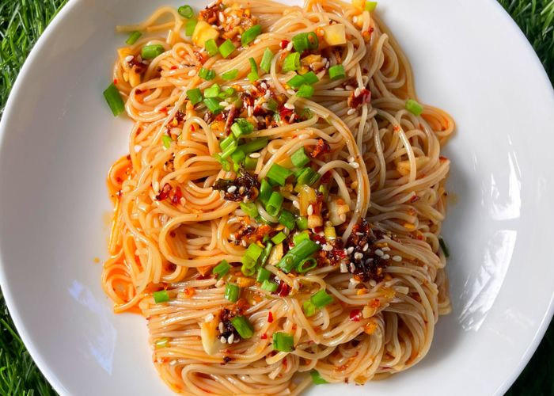

Home
Chili Oil Noodles

Description
These simple chili oil noodles are a quick and flavorful dish that comes together in just minutes. The combination of chewy wheat noodles, aromatic garlic, and spicy Sichuan chili flakes creates a bold and satisfying meal. A drizzle of hot oil over the seasonings enhances the flavors, making every bite irresistibly delicious.
Perfect for a busy day or a late-night craving, these noodles require minimal ingredients but deliver maximum taste. You can customize them with your favorite toppings, such as scallions, cilantro, or a fried egg, to make them even more indulgent.
Ingredients
- 4 ounces thick wheat noodles
- 3 tablespoons neutral oil
- 3 cloves garlic, minced
- 1 tablespoon Sichuan chili flakes
- 1 green onion, chopped
- ½ tablespoon light soy sauce
- ½ teaspoon dark soy sauce
- ½ teaspoon Chinese black vinegar
- ¼ teaspoon sugar
- Salt, to taste
- Fresh cilantro or sesame seeds for garnish (optional)
Steps
- Cook the noodles: Boil the noodles according to package instructions until al dente. Drain and place in a bowl.
- Prepare the seasoning: Add minced garlic, chili flakes, chopped green onion, soy sauces, vinegar, sugar, and salt over the noodles.
- Heat the oil: In a small saucepan, heat the neutral oil until sizzling hot.
- Pour the hot oil: Carefully pour the hot oil over the chili flakes and garlic, allowing the flavors to bloom.
- Mix and serve: Toss the noodles until evenly coated with the sauce. Garnish with cilantro or sesame seeds if desired, and enjoy!